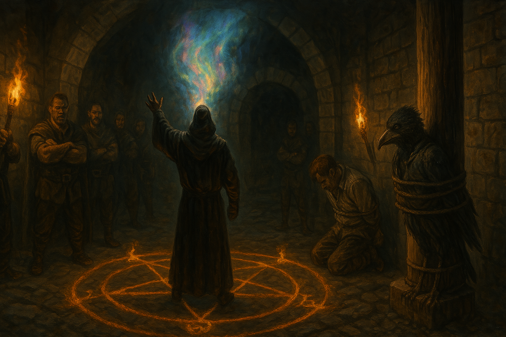

Chapter 2: Town of Villains
Mattington Shattered

Mattington Shattered
15048.11.16
一早醒來，Sugalu、Drayer 和 Paladin 在酒館吃了老闆準備的麵包，作為早餐。同時，在用餐過程中，Paladin 也向兩人說明了從與台北市議員們相遇後發生的種種冒險故事。然而，在過程中 Drayer 不斷感覺到有來自酒館其他食客的眼光緊盯著他們。在 Drayer 提醒後，Paladin 決定將冒險團到麥克嵩後的旅程之後再說明，而三人也趕緊收拾行囊，離開朗甫頓。
因為 Paladin 取得的地圖放在 YHWH 身邊，此時他們已經沒有地圖可以參考，只知道目前的目的地，瑟巴諾在朗甫頓的西北方。三人決定先在朗甫頓探索一下，看看有沒有能補給的地方，同時也對這座城鎮有更深入的了解。然而，花了點時間探索，卻發現朗甫頓只是個小鎮，除了酒館和旅店外，基本上沒有什麼多大規模的商店。Sugalu 決定折回酒館，向老闆打聽關於瑟巴諾的消息，以判斷這趟旅程需要走多久。
回到酒館，Sugalu 成功套到話，得知往瑟巴諾其實並不遠，大約只要步行兩三個小時就能到。然而此時 Drayer 依然感受到緊緊盯住他們的眼光，因此示意 Sugalu 該出發了，Sugalu 也同時逃避了酒館老闆好奇詢問他們去瑟巴諾的窘況。
朝著西北放走，Sugalu 發現方向不難定位，同時 Drayer 也殿後，幫忙檢查是否有來路不明的跟蹤者。路上 Paladin 也和兩人補上台北市議員到麥克嵩後的冒險旅程。
兩個多小時後，三人來到了一個荒廢，甚至可以說是蓋到一半的破舊城門，上面用潦草的字跡寫著「Sebano」，Drayer 甚至發現在字底下還有被劃掉的一行字，仔細宜看，寫著「Town of Villains」，彷彿提醒著他們來到瑟巴諾最好小心一點。
踏入瑟巴諾，路上沒有什麼行人，卻處處讓人感到警戒。在朗甫頓時，酒館老闆曾和 Sugalu 說沒什麼人去瑟巴諾，從瑟巴諾來朗甫頓的人還比較多。三人花了點時間，想了解一下到底這座城鎮有多不堪。一段時間後，Drayer 被緊盯的不安感達到最高點，他一回頭，看見一個鳥形生物直直站在他們身後，似乎也沒有要躲藏的意思。發現那生物不是人類後，Drayer 馬上放下戒心，決定去認識一下。
鳥形生物將斗篷從頭上放下，露出他身黑色的巨大嘴喙，以及如烏鴉般的頭。經過簡單對談後，他們得知名為 Tweeter 的他，是月神教的信徒，因為過去師父與 Mr. Moon 的認識，他被 Mr. Moon 通知，請求前來協助傳說中的 Paladin 爵士。Tweeter 也拿出了掛在脖子上的月神教墜飾，亮麗而潔白。此時，Paladin 感受到前一日 Mr. Moon 曾遞給他們的石頭，便從背包中取出，發現他正在共鳴而震動。Tweeter 看了一眼，表示認同。雖然得知了不少信息，他們卻發現，除了 Drayer 能聽懂 Tweeter 完整的發言外，Sugalu 和 Paladin 僅能聽懂極少部分的關鍵字，無法順利搭成一句話。在 Tweeter 的說明下，他拿出自己部族流傳下的書籍給他們參考，並解釋自己的部族因為惹怒神明，而被下了詛咒，沒了翅膀，說話也只能藉由模仿，像鸚鵡一般，支離破碎。
說著，眾人肚子都餓了，Tweeter 提議可以去找個酒館，Drayer 和 Sugalu 卻拿出了今早還沒吃完的麵包，走在路上便啃食了起來，但是他們的雙眼卻沒有停下尋找酒館的任務。瑟巴諾的街道冷清，各種店家看起來不是被破壞、歇業已久，就是看起來十分古怪。在 Drayer 和 Sugalu 直覺的判斷下，他們走進了路邊一間店。店外沒有任何顯眼的招牌（當然也沒有寫著酒館），窗戶甚至被封住，但是從門外，可以聽見裡頭嘈雜的聲響，因此 Sugalu 肯定裡面是可以進去的。
走入店內，四人發現店內空間十分擁擠，服務生忙碌不已，無暇接應他們，而除了兩張桌椅外基本上都被坐滿了。四人好不容易擠了進去，坐在一個空桌旁，不久後，便有一名店員來到桌邊為他們點餐。然而，這人的身影卻讓 Paladin 想起在麥克嵩時見過的一個人：Sunrise 酒館的前老闆 Jonathan。Paladin 示意請「Jonathan」再給他們一點時間考慮要吃什麼。打發走他之後，Paladin 向夥伴們說起他的發現，並詢問他們的建議。Tweeter 發表了他的想法，但是在 Drayer 耳中，聽到的是要拿刀子將 Jonathan 殺了；在 Paladin 耳中，聽到的卻是不要衝動，先冷靜觀察看看；Sugalu 則是整個有聽沒有懂。發現了三人的資訊不對等後，Tweeter 決定握緊胸前的吊飾，並透過心靈感應向 Sugalu 以及 Drayer 表示，他是希望先不要衝動，嘗試套套看話，再決定要怎麼做。
隨著 Jonathan 的再次到來，Paladin 向 Jonathan 詢問他是否認識 Frankie？Jonathan 露出狐疑的表情。Paladin 向他表示抱歉，他長得很像過去他在麥克嵩認識的一個酒店老闆 Jonathan。「Jonathan」表示那是他的弟弟，他們很久沒聯絡了，而他的名字叫 Jonas。四人點了餐點後，變嘗試觀察附近其他食客的行為。出乎他們意料之外，大多數的客人其實都沒有在吃東西，而是在桌子邊緊緊圍著，小聲地討論，Sugalu 似乎聽到了不少和幫派有關的話題，出乎他的意料之外，卻沒有任何和宗教有關的事討論。不久後，Jonas 將大家的餐點遞上。Paladin 意識到自己的餐盤底下似乎不太平穩，拿起餐盤，竟然有張紙墊在下面。Paladin 擔心周圍有其他人偷看，想要到店內的廁所偷看紙條，卻發現要鑽到廁所得度過重重難關，不太可行，於是將紙條先塞到自己的鞋底下。四人趕緊吃完，便由 Drayer 帶頭，準備離開。
走到店門口，Drayer 發現店門被一名壯漢擋住了。在 Drayer 準備向他借過時，壯漢卻一拳揍向 Drayer 的臉，一場酒館鬥毆於是拉開序幕。四人發現周圍被六名惡漢包圍，在四人分別發威之下，六名惡漢全數倒下，店內的嘈雜聲嘎然而止。看見周圍沒有其他威脅，Paladin 自在地將鞋底的紙條取了出來，發現上面寫著小小的「Help me」。
隨著 Sugalu 的目光，四人發現此刻 Jonas 正在吧檯內，被一名壯漢押向吧檯深處的門內。Sugalu 和 Drayer 朝著吧檯衝去，Paladin 和 Tweeter 則朝著壯漢攻擊，壯漢承受住攻擊，將 Jonas 押入門內後便將門關上。Sugalu 見狀想衝上前去，卻被吧檯旁的一名客人壓住肩膀，勸他不要涉入過深，卻被 Sugalu 掙脫開來。Sugalu 靠著蠻力將門破壞後，四人變踏入陰暗的空間內，裡頭有不少木箱，卻不見人影。簡單調查後，四人發現後面還有扇門，打開發現通往外面的街道。
Sugalu 踏入街道，看見門外一名靠在牆邊的年輕女子，似乎正在想著什麼事，便問他是否有看見任何人從這裡出來。女子表示有看到兩個人出來，朝著右手邊的方向跑去了。四人看見右方遠處壯漢與 Jonas 的身影，趕緊跑了過去，同時，Paladin 也邀請這名女子一同加入追趕。
壯漢與 Jonas 在其中一條街口向右轉，沒入了巷弄中。Sugalu 花了點時間趕到，卻發現附近有好多條類似的巷弄。在 Tweeter 的觀察下，發現血跡似乎是停在了第二條巷子。向巷子內看去，裡頭左右兩側各有五扇門，深處則是死巷。判斷不出到底兩人躲進了哪扇門，女子利用自己的一隻老鼠進行探索，最終認定左手邊的第五間最為可疑。Sugalu 走向那扇門，發現門不用破壞就能打開。門內是黑暗的，除了簡單的桌椅外，沒有其他家具，然而左右兩側都各有一扇門。Sugalu 朝左邊的門走去，發現打不開，女子利用老鼠，發現左邊的門內有很多櫃子，上面放了他沒見過的木盒子，但是沒有人影。Paladin 和 Tweeter 朝右邊的門嘗試以長劍攻擊來擊開這扇門，卻發現徒勞無功。女子再次利用老鼠探索，發現裡面有兩個人影，似乎就是他們在尋找的目標。女子從行囊中掏出一些器具，成功將右手邊的門開了鎖，卻發現裡頭只剩下倒在牆角的 Jonas，手腳被綑綁，口部也被綁住，而他頭頂的窗戶是開的。
簡單檢查了一下 Jonas，發現他生命依然穩定後，Sugalu、女子、Drayer 和 Tweeter 決定趕去追查逃跑壯漢的蹤跡，於是從房子門口跑了出去。Sugalu 看見他已從巷弄外逃出，在跑到主要幹道上後，他從遠處射了兩發手弩，其中一發命中了壯漢的大腿，逼得他一跛一跛的逃亡。四人追了上去，跟著血跡，跑回了酒館的後門。Sugalu 和 Drayer 決定繞回前門，兩邊可以前後包抄。
女子和 Tweeter 從後門進入，Tweeter 發現這裡的木箱和剛才看見的排列方式似乎有異動，告知女子後，便想做個簡單調查，女子則趕緊跑回酒館用餐區，留下 Tweeter 獨自調查。一個瞬間，Tweeter 發現自己被蓋布袋了，他努力掙扎，並做出反擊，卻沒能阻止蓋他布袋的那個人。空氣逐漸稀薄，他被拳頭重擊，陷入昏迷的前一刻，聽見了那人說著：「會說話又會魔法的鳥，看來可以賣不少錢呢。」
在五人將 Jonas 拖出門外後，Paladin 獨自留在原處守護昏迷的 Jonas。一段時間後，Jonas 逐漸清醒，便發出了悶住的聲響。Paladin 發現自己忘了將 Jonas 嘴上的繩子解開，感到十分抱歉，而 Jonas 則訕笑著 Paladin 竟然沒認出他便是 Jonathan。Jonathan 也請求 Paladin 為他解開綑綁在手腳上的繩索。兩人討論著接下來該去哪裡，Paladin 表示自己要繼續待在這裡，等待夥伴的歸來，Jonathan 則表示要趕快躲起來，不然被發現就完了。他也建議可以先去他的住處，但是自己要 Paladin 也一起過去，以免自己去了遇害沒人能救。在兩人討論的過程中，巷口傳來腳步聲，三五名樣貌兇惡的惡漢朝著他們走來。情急之下，Jonathan 趕緊跑回剛才逃出來的房子內，Paladin 也趕緊跟上。將門鎖上後，兩人逃到剛才 Jonathan 被綑綁的小房間內，試圖從剛剛發現的窗外跳出去。門外傳來大力的敲打聲，在 Jonathan 趕緊搬了些椅子到小房間後，他便爬到了窗口，跳了下去。Paladin 隨後跟上，卻發現窗戶朝向的位置竟然是房屋門口的左手邊，Jonathan 竟然直接跳到了惡漢們的身邊而被制伏了。情急之下，Paladin 也跳了下去，想趕緊逃走，卻跌了個大跤。他的眼前，出現了幾個人影，將上頭的光線都遮蓋住了……。
酒館內，Drayer 和 Sugalu 從正門走入，發現不久前鬥毆的屍體都不見了。雖然感到好奇，但兩人決定先以被 Sugalu 射中大腿的壯漢開始尋找。Drayer 沒有看見相似的人影，Sugalu 卻像個瘋子般逐桌逡巡，將身子壓在各張桌子上，緊盯著其他客人。一名店員見狀，拍了拍 Sugalu 的臉頰，想將他趕走，誰知 Sugalu 狂怒之下，將店員直接擊暈。Sugalu 想將這名店員的脊椎打斷，以免他未來找他們麻煩，從後門出現，剛才與他們一同巡查的女子卻阻止了他，自己搶先將店員殺死，並作起了法，將這明剛死的店員直接復甦，並問起了話，他們也得知店員名叫 Jack，他是自己的老大，以及要夠厲害，才有辦法在瑟巴諾生存。
在 Paladin 跌到地上後，他趕緊閉上雙眼，假裝自己摔暈了。沒多久，他就被捆綁起手腳，幾名惡漢將他與 Jonathan 抬起。走了好一段時間，Paladin 感受到光線逐漸暗去，偷偷睜開雙眼，惡漢們正朝著地底下前進。Paladin 假裝咳嗽，想引起惡漢們的恐慌，卻只有一名惡漢用他的手掩住了 Paladin 的口鼻。不久後，陰暗的地底出現了光，Paladin 和 Jonathan 被帶到了一個地底的小廣場，周圍插了火把，其中一個柱子底似乎還綁了個人。接著，Paladin 和 Jonathan 便被紛紛綁在一個柱子底部。Paladin 看見 Jonathan 似乎已經昏了過去。
被綁在另一根柱子底部的是 Tweeter。他看見 Paladin 和 Jonathan 兩人被抬了進來也被綁在柱子底部。惡漢們處置好他們後，便走向後方他們的視線範圍外，那裡一片漆黑。Tweeter 試著呼喚 Paladin，但在 Paladin 的耳中卻只是鳥叫聲。然而這「鳥叫聲」卻引起了一名惡漢的注意，他來到了 Tweeter 面前。Tweeter 想藉機詢問大家被綁來這裡的事，卻被惡漢敷衍了過去。不久後，Tweeter 和 Paladin 都聽見了左側他們進來的通道傳來了腳步聲……
在酒館內向 Jack 問過話後，女子、Sugalu 和 Drayer 突然想起原本一同前來的 Tweeter。三人朝著酒館後門的倉庫走去，卻沒有見到他的蹤跡，只有看到地上的茅草似乎有被挪動過的痕跡。三人不知道該如何找到 Tweeter，陷入苦思，決定先回去找 Paladin。
回到了當初 Paladin 與 Jonathan 和大家分別的房子前，Sugalu 發現房子內外都沒有任何人影。Drayer 決定利用 Paladin 戴在身上的紫羅蘭勳章進行定位。自我介紹名為華生的女子決定易容成他們看見綁架 Jonathan 的壯漢，以便後續追蹤。跟隨著定位的方向，三人（以及遠遠跟在後頭，化為殭屍的 Jack）向著目標方向前進，走入了地底。
來到地底 Tweeter、Paladin 和 Jonathan 被綁住的小廣場，三人看見被綁在柱子底部的三個夥伴，此時 Paladin 已成功將自己身上的繩子鬆脫，並用腰間的短劍將綁在腳上的繩子解開。
假扮成壯漢的華生看向黑暗中的惡漢們，發現他們已圍成一個圓陣，站在中間的壯漢甚至眼神對著他，令他感到不寒而慄。華生試圖讀取壯漢的心思，發現他想著「時間差不多了」，以及「讓我看看你們到底有多厲害」。隨後，他想朝著惡漢們的方向製造魔法黑暗，卻發現自己的師法竟然失敗了，讓他感到萬分恐懼。
同時，Sugalu 前來解救 Tweeter 和 Jonathan，兩人與 Paladin 合力將 Jonathan 抬起，準備朝著來的方向逃走。
Drayer 看向惡漢的方向，眼神盯著壯漢。接著，他將長劍插在地上，將刻有戰爭神達里崗符號的劍柄捏碎。Drayer 將背後長袍的帽子戴上，一邊走向惡漢，一邊將胸前達里崗的骷髏法器捏碎，露出裡頭發出深黑色光澤的寶石。Drayer 前方的兩名惡漢移身，為他敞開了道路。Drayer 走入了眾人圍著的魔法陣中，轉身面對他的夥伴們，開始以拉索斯語吟唱。在 Drayer 的正上方，一個裂縫逐漸撕裂，露出無以名狀、難以形容的光亮色彩，將 Drayer 與此刻站在他身旁的壯漢籠罩，然後在轉刻間暗去。
Drayer 消失了。